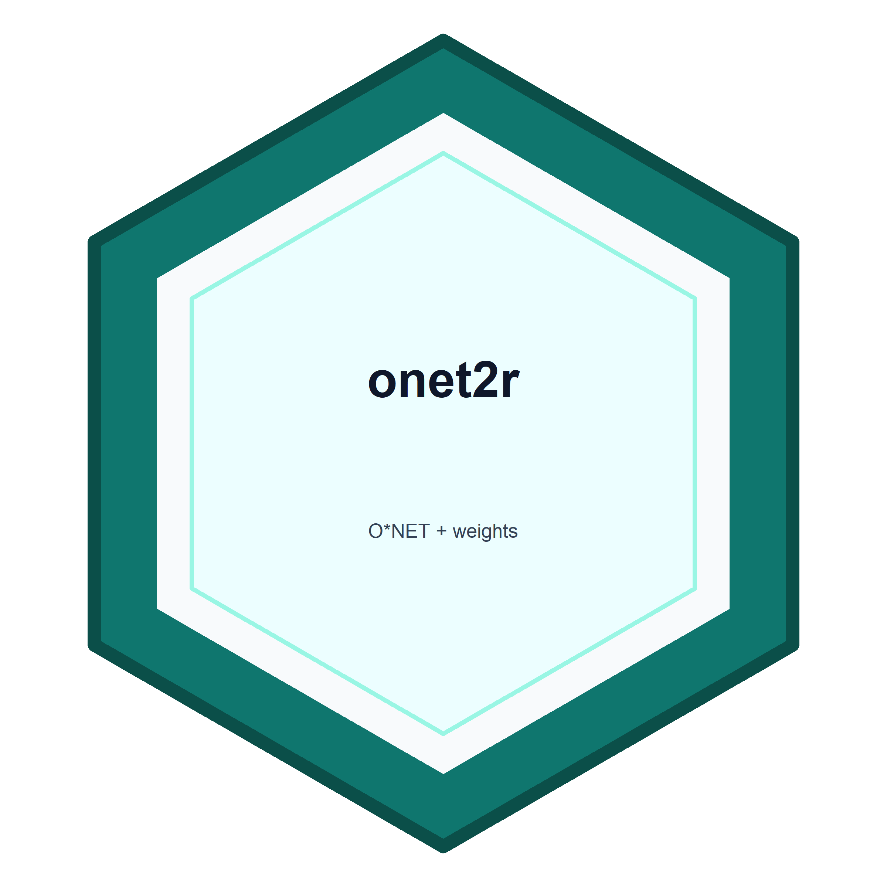

Read Local OpenAI Signals Work-Activity Shares
Source:R/openai_iwa.R
onet_openai_iwa_read.RdReads the country-quarter Intermediate Work Activity (IWA) CSV from the OpenAI Signals release. These are published shares of classified work-related consumer ChatGPT messages, not occupation-level adoption or AI exposure.
Value
A tibble with character quarter, country_code, iwa_category,
and iwa_id, logical is_other_iwa, and numeric share_of_messages.
quarter is the ISO date of the quarter's first day. iwa_category
preserves the published code or "Other IWA" label. The latter has a
missing iwa_id, not an invented O*NET identifier. Provenance columns
are source_path, source_url, source_sha256, source_read_at,
source_as_of, and integer source_record. A full source receipt is
retained as an attribute. Header-only files return the same typed schema.
Details
Extract share_of_work_related_messages_by_onet_iwa_country_quarter.csv
from the manually downloaded release. The required, exclusive source
columns are quarter, country, iwa_cleaned, and share_of_messages.
Column order may vary. Duplicate country-quarter-category keys, malformed
CSV records, invalid identifiers, and nonfinite or out-of-range shares are
errors. Quarter dates must be January, April, July, or October 1.
Shares are conditional on country, quarter, and classification as work related. They are not shares of workers, employment, all messages, or time spent at work. The reader does not normalize, aggregate, select an exposure measure, or allocate usage to occupations. Partial country-quarter groups are permitted and are not assumed complete. Unreported rows remain absent, not zero. Reported zeros remain zero.
The release README version 3.0 specifies five-decimal rounding for IWA
shares, after differential-privacy noise and normalization. Consequently,
published country-quarter totals can differ slightly from one. The
November 2026 download contains 164 named IWAs plus "Other IWA", not
165 individually identified IWAs. This is a snapshot fact, not a fixed
category count enforced by the reader.
The source covers sampled adult consumer ChatGPT messages. Enterprise messages and Codex are excluded, as are users who deleted their accounts or opted out of training. Message classification does not establish the user's occupation or successful completion of an activity. Linking IWAs to occupational reference tables does not establish occupational adoption.
The release README specifies CC BY 4.0. Cite OpenAI Signals and identify
the source snapshot when using the data. No real usage data are bundled.
The digest describes exactly the CSV bytes parsed, not its enclosing ZIP.
Source URL and as_of are caller assertions. Local read time is not
download time. See https://openai.com/signals/data/ and the accompanying
README for methodology and licensing.
Examples
path <- system.file("extdata", "openai-iwa-synthetic.csv", package = "onet2r")
usage <- onet_openai_iwa_read(path, as_of = "synthetic example")
usage[c("quarter", "country_code", "iwa_category", "share_of_messages")]
#> # A tibble: 9 × 4
#> quarter country_code iwa_category share_of_messages
#> <chr> <chr> <chr> <dbl>
#> 1 2025-01-01 US 4.A.1.a.1.I01 0.5
#> 2 2025-01-01 US 4.A.1.a.1.I02 0.3
#> 3 2025-01-01 US Other IWA 0.2
#> 4 2025-04-01 US 4.A.1.a.1.I01 0.4
#> 5 2025-04-01 US 4.A.1.a.1.I02 0.4
#> 6 2025-04-01 US Other IWA 0.200
#> 7 2025-01-01 GB 4.A.1.a.1.I01 0.6
#> 8 2025-01-01 GB 4.A.1.a.1.I02 0
#> 9 2025-01-01 GB Other IWA 0.4